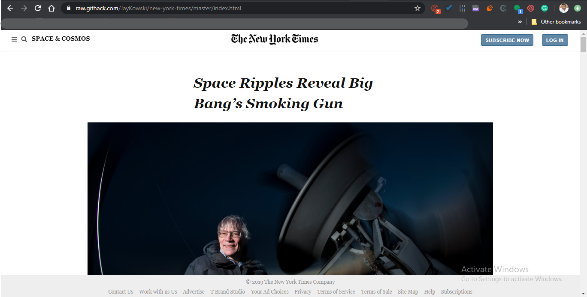
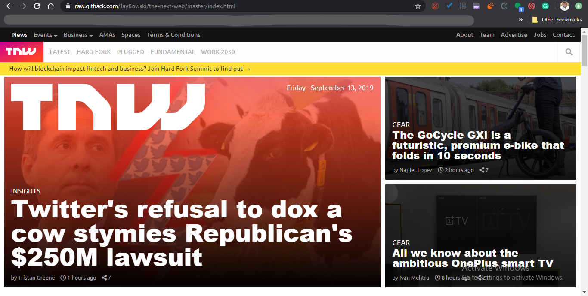
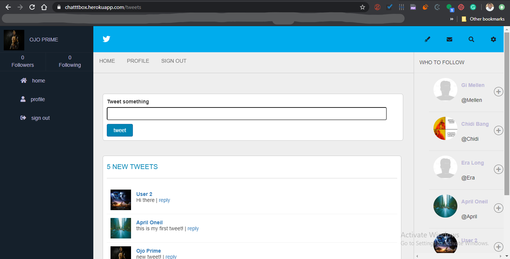
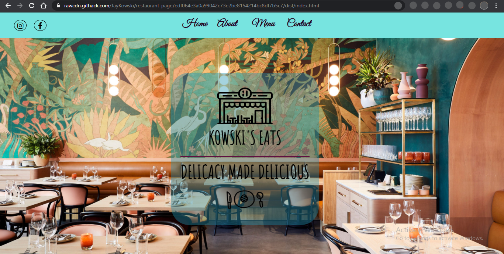
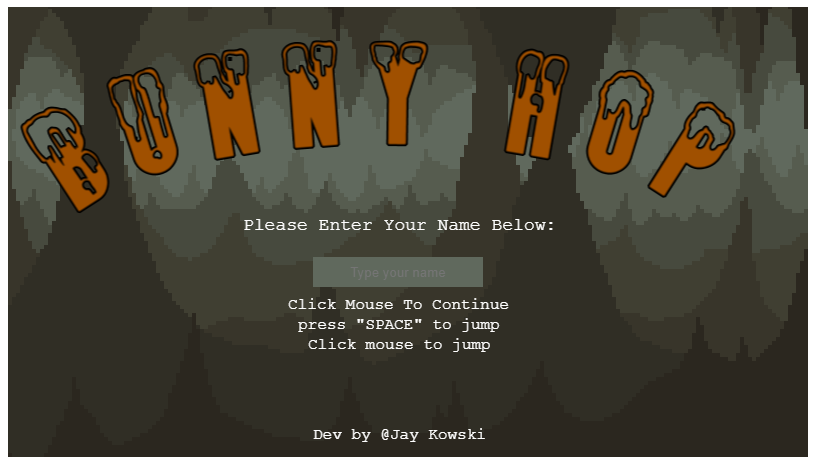
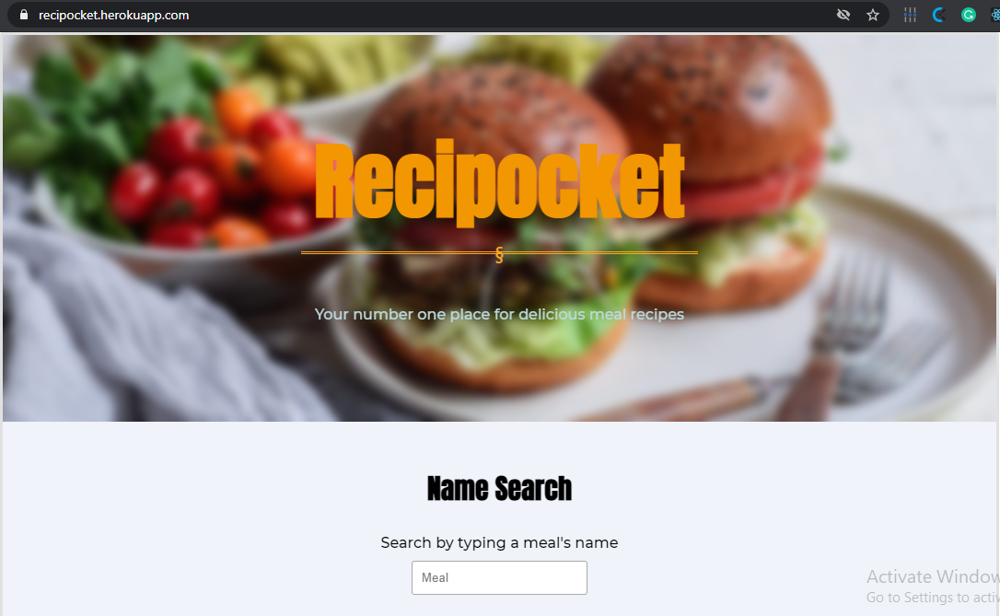

About Me
My name is Judah Maina and i am a fullstack developer working with Ruby, Rails, Javascript, HTML, CSS and SASS. I am passionate about web development and also enthusiastic about the ever changing technologies and keeping up with them too. I am currently learning how to create Single Page Applications using ReactJS as i have read about its scalability and ease of rendering components. Coding has always been my second language!
Skills
My curiosity for coding begun about 2 years ago as i ventured into coding with JavaScript and later on ventured into HTMl and CSS and i have been in love with coding ever since. a year ago, i discovered version control with Git and i started exploring it's use and started saving my code with Git. Below are the skills i have learnt and still learning.
My Focus
- Front-end
- back-end
- Full-stack
- HTML5
- CSS3
- JavaScript
-
 Ruby
Ruby -
 Rails
Rails
Portfolio
-

The New York Times Remake
Github Live DemoA clone made after "The New York Times" website to practice how to build mockups.
#HTML5#CSS3
-

The Next Web Remake
Github Live DemoA clone made after "The Next Web" website to practice how to build mockups.
#HTML5#CSS3
-

Chatbox opinion sharing app
Github Live DemoA simple chat app built with Rails. A user can log in, post their opinion, like an opinion, and also comment on a fellow user's opinion
#Ruby#Rails#Bootstrap
#CSS#RSpec
-

Kowski's eats
Github Live DemoThis is a restaurant page built for a fictional fast-food restaurant and users Vanilla Javascript to render the elements and images. It is a single page application built in vanilla JS
#JavaScript#CSS
-

To-do list
Github Live DemoThe to-do list app is exactly as the name suggests. it is a web app that helps a user keep track of their projects and tasks to be accomplished within the project. a user can mark the task as complete or incomplete, and also give each task a priority level.
#JavaScript#CSS
-

Bunny-hop
Github Live DemoBunny-hop is a web-based endless runner game build on JavaScript's game engine PhaserJs. A user jumps from platform to platform and avoids falling off a platform, and if that happens, it's game over and the leader board is displayed.
#PhaserJS#JavaScript
-

Recipocket
Github Live DemoRecipocket is a meal catalog where a user can search for meals according to a category, and also a plain name search. It consumes data from an API namely themealdb.com
#ReactJS#JavaScript#CSS